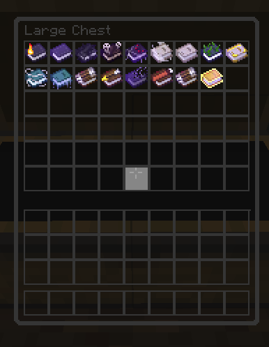
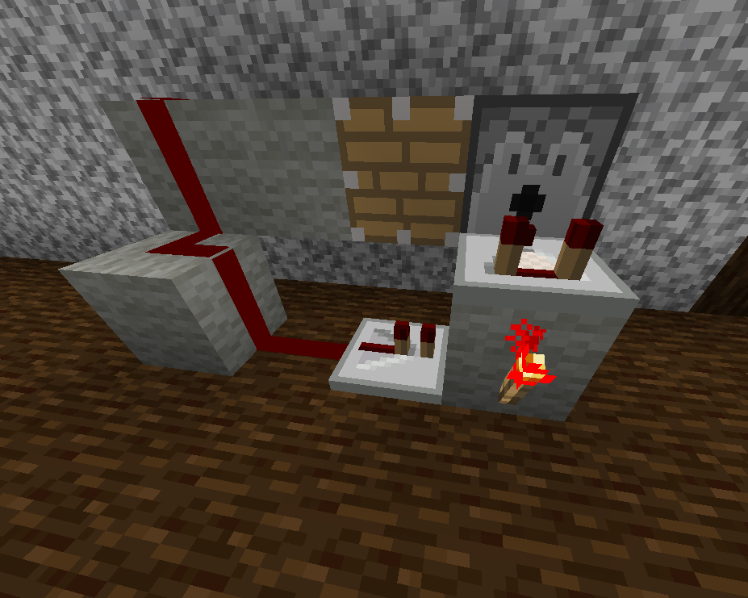
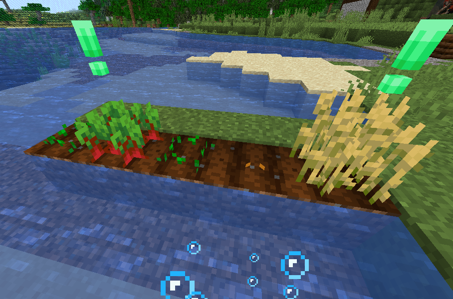
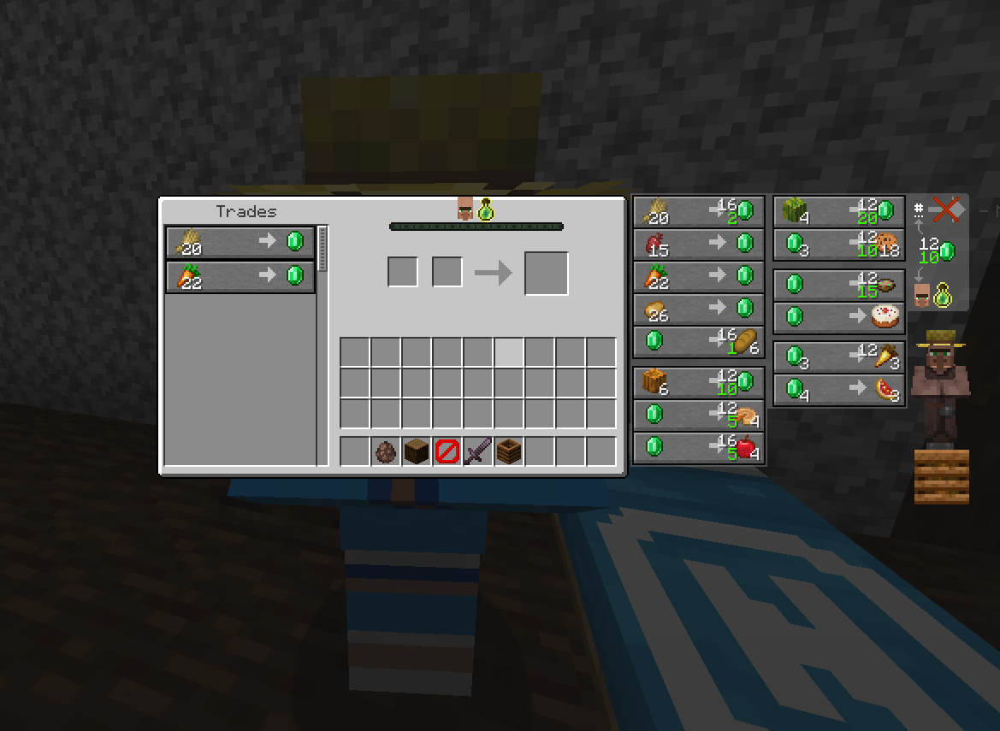
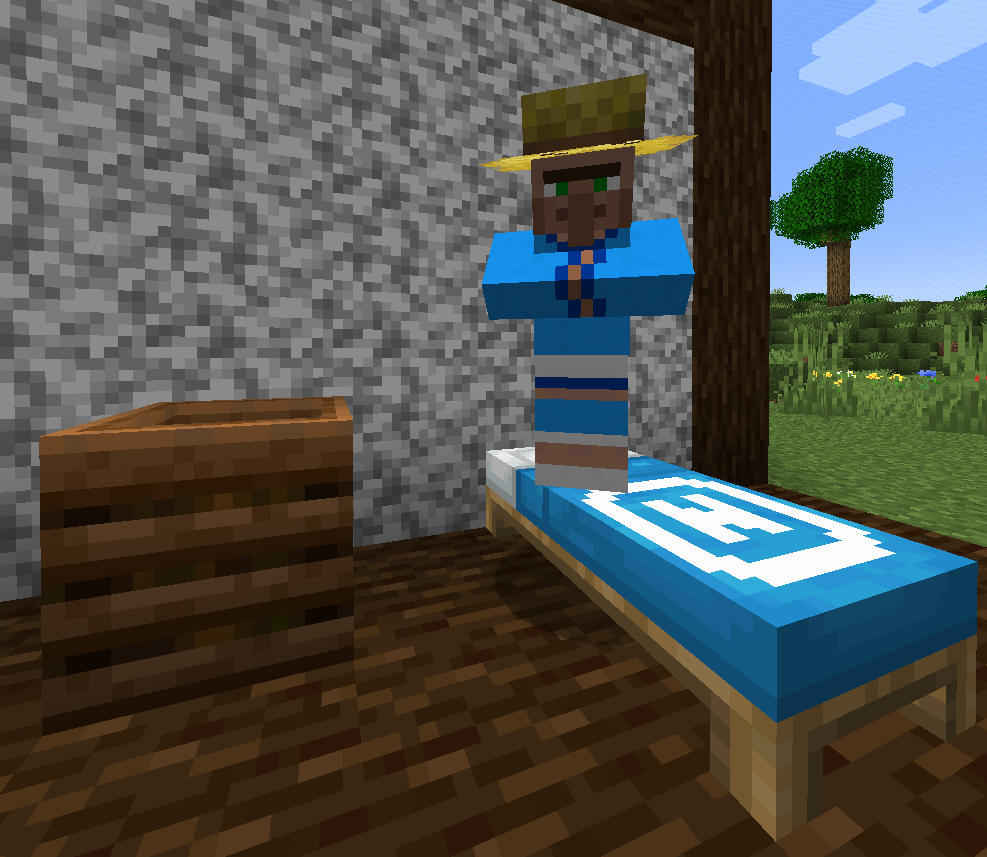
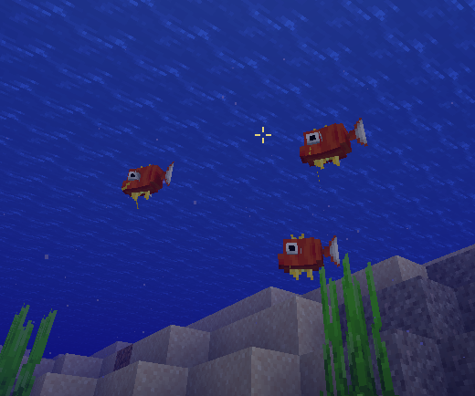
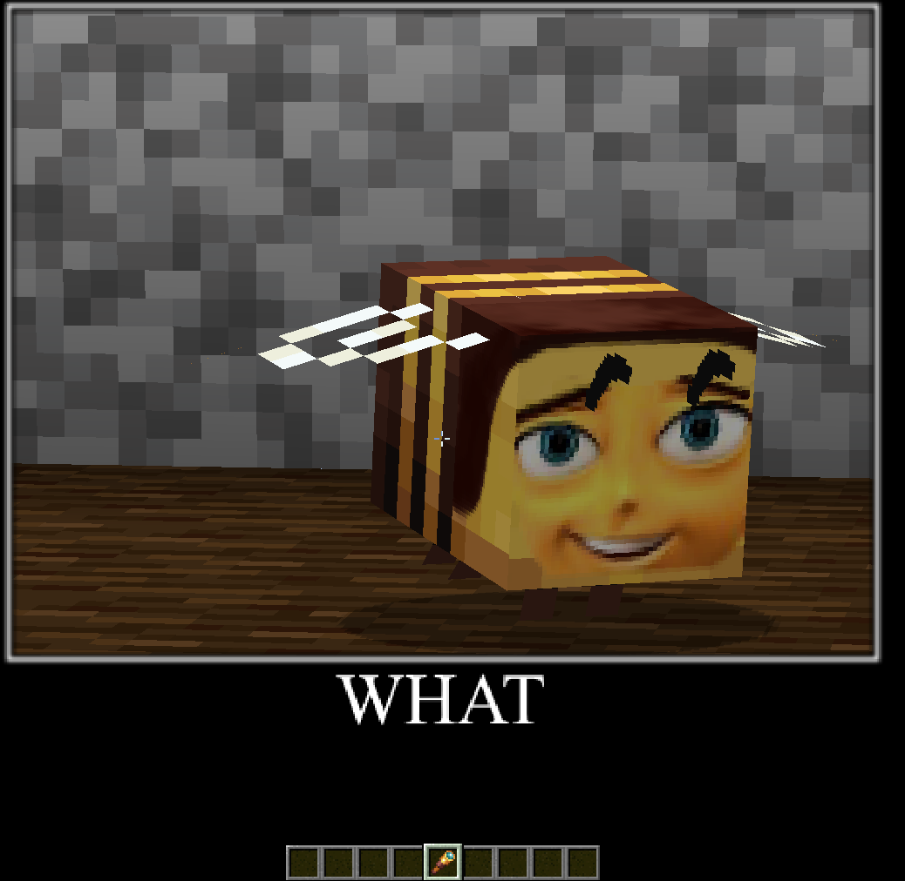

Download Minecraft Texture

Vi basterà clickare sull'immagine per andare al file sul Drive di google ed iniziare il Download in alto a destra!
Funziona su quasi qualsiasi versione anche se potrebbe dirvi il contrario
(si consiglia di utilizzare la Optifine per avere più funzionalità)
Perchè usare la texture di Rufus?
Perchè dentro ha un po' di tutto:
A partire da un'interfaccia più pulita

Semplificare la Redstone

Rendere più intuitive alcune meccaniche

In sostanza unire l'utile...

al dilettevole;

Il tutto pieno di meme italiani e non


Per rendere Minecraft un'esperienza unica
Note: la texture è in continua (ma non costante) evoluzione, si prega di verificare ogni quando è stata aggiornata con nuove features
Ultimo aggiornamento: 18/03